Copyright © 2008, 2026 Obeo - All rights reserved. This program and the accompanying materials are made available under the terms of the Eclipse Public License v2.0
Les diagrammes d’interaction permettent de définir des diagrammes de séquence sur quasiment la totalité des éléments définis dans IS Designer, à l’exception du métamodèle Database.
Les diagrammes d’interaction manipulent des concepts très proches des diagrammes de séquence UML.
Un assistant de création de modèles d’interaction est accessible via le menu :
File > New > Other... > Interaction Model (catégorie IS Designer)
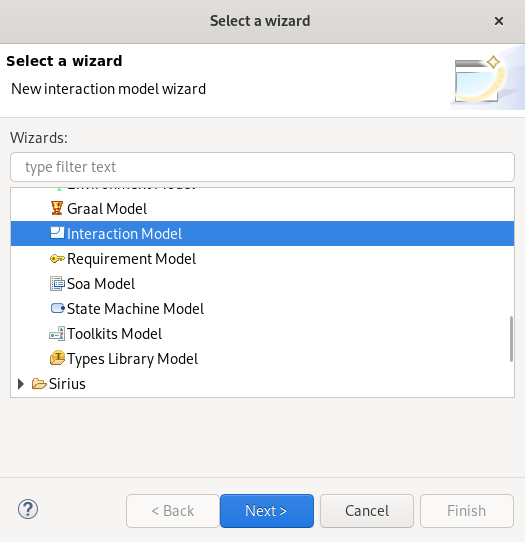
Cet assistant permet de définir :
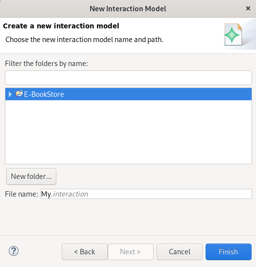
Une fois l’assistant validé, le modèle est créé.
Pour créer un diagramme d’interaction, activer le point de vue
Interaction via le menu contextuel
Viewpoints Selection du projet ou du fichier
*.aird.
Une fois le point de vue activé, sélectionner New interaction dans le menu contextuel des éléments pour lesquels un diagramme d’interaction peut être créé.
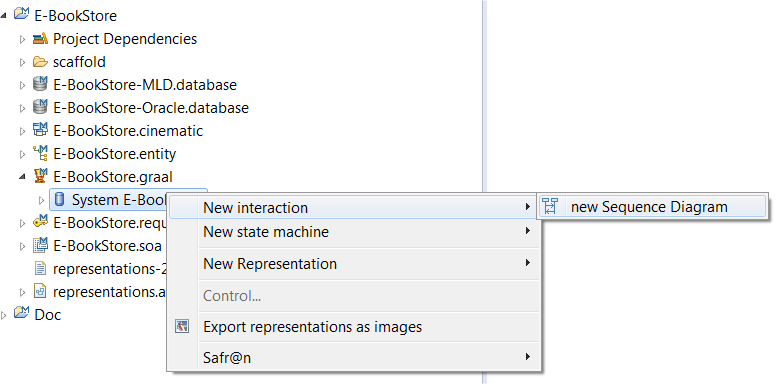
Un objet
Interaction et un diagramme de séquence sont alors créés et visibles sous l’objet sélectionné.
Il est possible de créer autant de diagrammes de séquence que voulu pour un même objet.
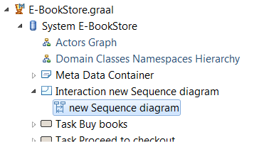
Étant donné qu’il y a très peu de contraintes sur l’emplacement d’un diagramme d’interaction, il peut être utile d’utiliser l’arborescence par point de vue pour le retrouver, comme décrit dans le chapitre ISD – Environment tooling de la documentation.
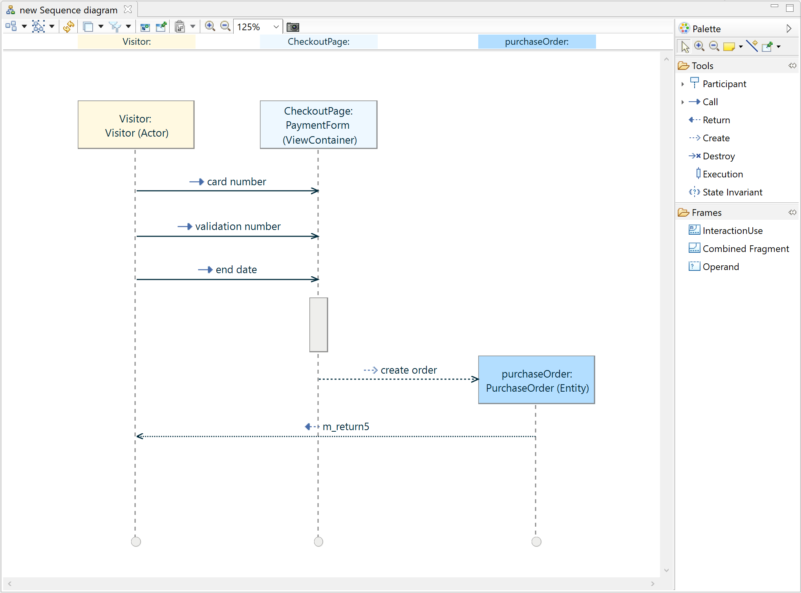
Les éléments suivants sont affichés sur le diagramme :
Les outils fournis par la palette sont :
|
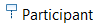 |
Création d’un participant et de sa ligne de vie. |
| Création d’un message d’appel simple. | |
|
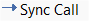 |
Création d’un message d’appel synchrone. Un message d’appel simple est créé, une zone d’exécution est créée sur le participant appelé. Enfin, un message de retour vers le participant initial est créé. |
|
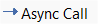 |
Création d’un message d’appel asynchrone. Un message d’appel et une zone d’exécution sur le participant appelé sont créés. L’appel étant asynchrone, aucun message de retour n’est créé. |
|
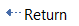 |
Création d’un message de retour. |
|
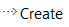 |
Création d’un message de création. L’initialisation du participant est rattachée à l’extrémité du message. |
|
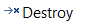 |
Création d’un message de destruction. La ligne de vie du participant appelé est interrompue par une croix au niveau de l’extrémité du message. |
|
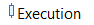 |
Création d’une zone d’exécution. |
|
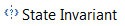 |
Création d’un invariant d'état. |
|
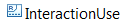 |
Création d’un lien vers un autre diagramme d’interaction. |
|
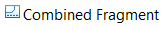 |
Création d’un fragment combiné. |
|
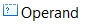 |
Création d’un opérande. |